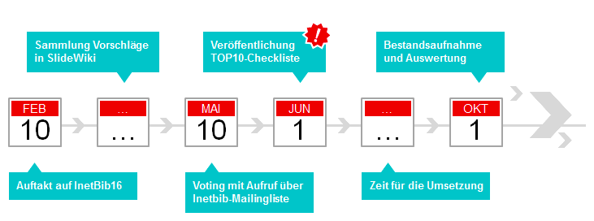

Kriterien beziehen sich auf die Lizenz.
Abgesegnet sind z.B. Apache 2.0, GPL, LGPL, MIT.
Metapher Radrennstrategien
Von René Kretzler CC-BY-SA-3.0
via Wikimedia Commons
Jeder bestimmt die Intensität des eigenen Engagements. Man kann jederzeit dazukommen oder abspringen
Lücken in der Gruppe müssen identifiziert werden. Dezentrale, asynchrone Kommunikationsinstrumente (...)
Anschub- oder Zwischenfinanzierung durch Bibliotheken mit „Kraft“. Andere fahren (vorübergehend) im Windschatten. Aber alle fahren mit und bringen eine Grundenergie auf.
Die Community Edition erfüllt die vorgenannten Grundsätze. Es bedarf viel Arbeit und Anstrengung, aber die Zusammenarbeit birgt auch viel Gewinn.
Viele hier im Raum setzen mit Goobi erfolgreich einen Open-Source-Workflow zur Digitalisierung ein und teilen die Prinzipien.
Doch was ist mit den produzierten Digitalisaten?
Sind diese auch "open"?
Und lassen sich die Open-Source-Prinzipien auf andere Bereiche übertragen?
Abstrakt betrachtet ist Offenheit eine Kultur, die aus offenen Inhalten, offenen Infrastrukturen und offenen wissenschaftlichen Prozessen gedeiht.
10 Open Access Tage (2006-2016)
10.-11.10.2016 in München
Aktuelle Entwicklungen gehen vor allem hin zu Massive Open Online Courses (MOOCs) auf geschlossenen Plattformen wie Coursera. Diese Lernmaterialien sind erst nach (teils kostenpflichtiger Anmeldung) zugänglich.
Gianpiero Petriglieri (2013): Let them eat MOOCs
“MOOCs aren’t digital keys to great classrooms’ doors. At best, they are infomercials for those classrooms. At worst, they are digital postcards from gated communities.”
siehe oben
Im Bereich Wissenschaft hat Björn Brembs die Anforderungen beschrieben. Siehe auch Interview mit Lambert Heller: "Wie frei soll das Betriebssystem der Wissenschaft sein?"
Die Europäische Kommission fördert 2016-2020 den Aufbau einer "European Open Science Cloud"
(vgl. Pressemitteilung vom 19.4.2016).
Im Bereich Kultureinrichtungen erstmal Daten öffnen und verknüpfen: freeyourmetadata.org !
Mit der Formatstandardisierung gibt es im Bibliotheksbereich schon einige Erfolgsgeschichten
siehe oben
Für Bibliotheken sind auch die Räumlichkeiten wichtig.
Wichtig für Open-Access-Bewegung, weil Gutachtertätigkeiten damit sichtbar werden.
Im Bibliothekswesen wird es z.B. in der Zeitschrift Informationspraxis erprobt
Beispiel: YouTube-Videos von Björn Brembs
Beteiligung von NutzerInnen und Externen
Zu Innovationsmanagement in Bibliotheken haben Birgit Fingerle und Rudolf Mumenthaler jüngst publiziert. Interessant ist auch das Projekt Innovationsmonitor.
Grundlegend ist die (alte) Idee des freien Zugangs zu Informationen und zu Wissen, oft zusammen mit der Idee der Commons
Technisch geht es in allen Varianten stets darum einen Remix ohne explizite Rücksprache zu ermöglichen.
Bibliotheken als Wächter für den (dauerhaft) freien Zugang zum Wissen
Anwälte der Offenheit im Dienste der NutzerInnen, der wissenschaftlichen Standards und des kulturellen Erbes
Don Tapscott
“You need to have integrity as part of your bones and your DNA as an organization, because if you don't, you'll be unable to build trust, and trust is a sine qua non of this new network world.”
Vortrag Four principles for the open world
TEDGlobal, Juni 2012
Handeln einzelner Bibliotheken fügt sich durch geteilte Prinzipien in einer Netzwerkstruktur zusammen.
Dafür sorgen gemeinsame Wertvorstellungen und damit verbundene technologische Prinzipien (vgl. Library Empowerment Manifesto von Adrian Pohl)
Kooperationen werden leichter und bilden sich bedarfsorientiert "von unten"
Nachnutzung der TYPO3-Extension "find" der SUB Göttingen, die eigentlich für Digitale Editionen entwickelt wurde. Code und Dokumentation lag unter einer freien Lizenz bei Github, daher Abstimmung nicht notwendig.
Das Contentmanagement-System TYPO3 und der Suchmaschinen-Index SOLR ist ohnehin Open Source.
Entwicklung eines Katalogfrontends in kurzer Zeit möglich, weil Komponenten "nur" integriert und angepasst werden müssen.
close
Ideensammlung auf 13. Inetbib-Tagung in Stuttgart
22 Ideen sind zusammen gekommen
Abstimmung über TOP10 vom 10. bis 31. Mai
Die Abstimmung läuft bis zum 31. Mai 2016
{kind=link}